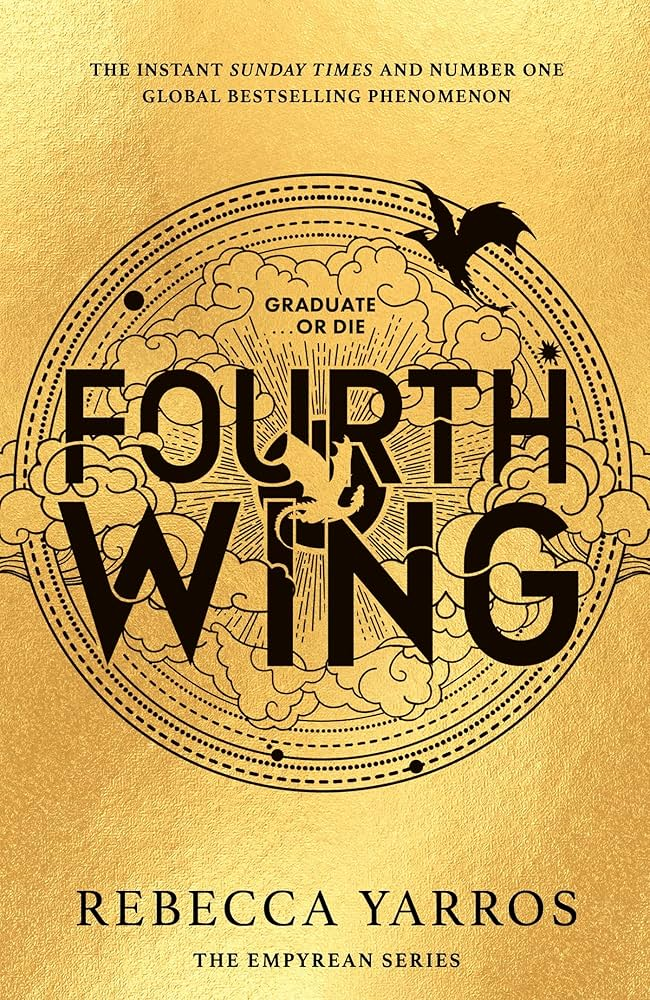
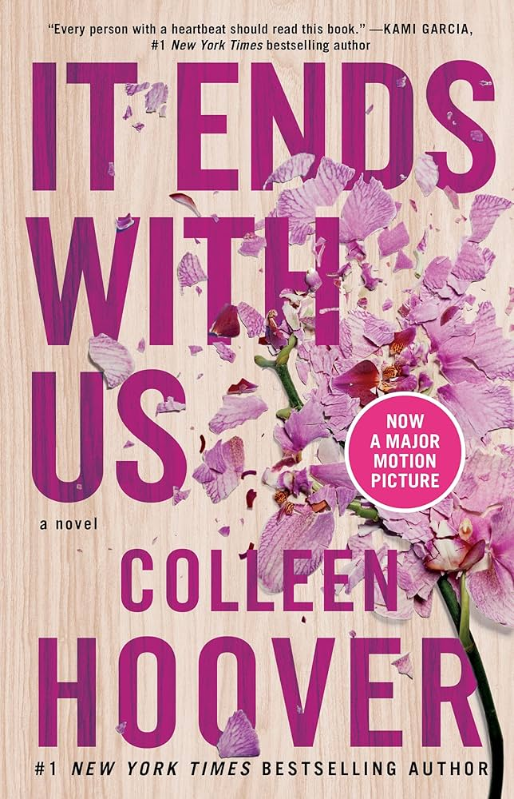
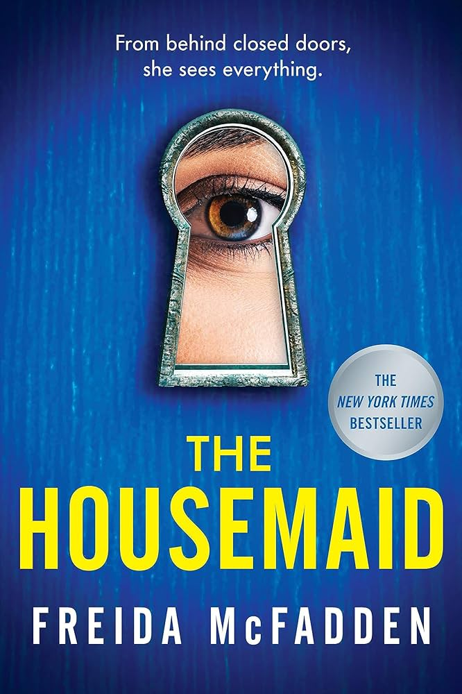
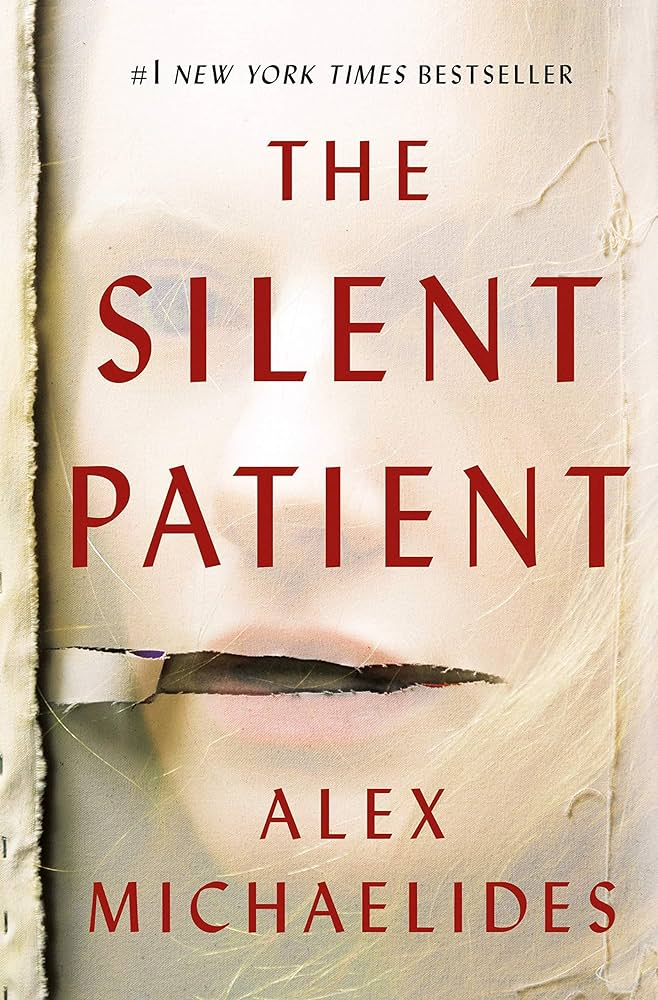
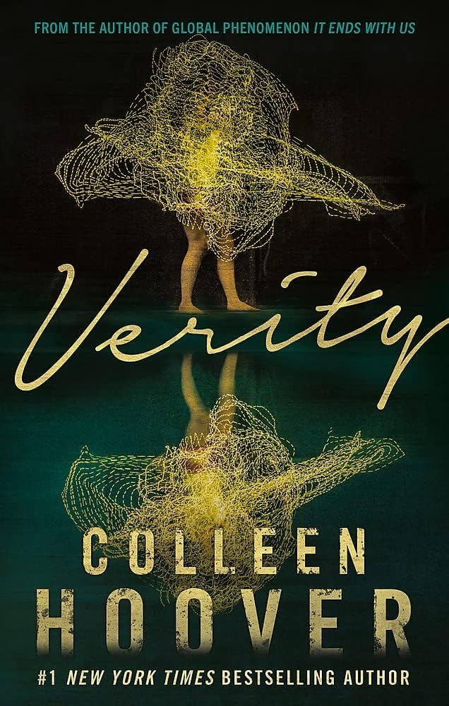

A Court of Thorns and Roses
I would recommend this if you like fantasy worlds, romance, and books that are easy to get pulled into.
This connects to BookTok because it is one of the books that helped make romantasy feel more mainstream.
Read moreThis page includes some of my own book recommendations, but I still wanted them to connect back to my project. Many of these books became popular or stayed visible because of BookTok, Goodreads, and online recommendation culture. I wanted this page to feel more personal while still showing how social media shapes what readers discover.
I would recommend this if you like fantasy worlds, romance, and books that are easy to get pulled into.
This connects to BookTok because it is one of the books that helped make romantasy feel more mainstream.
Read more
I would recommend this if you like fast-paced fantasy, romance, and high-stakes drama.
This connects to BookTok because the series built a lot of online hype and reader reactions.
Read more
I would recommend this if you like emotional books that people have strong opinions about.
This connects to BookTok because it became a major example of emotional fiction going viral online.
Read more
I would recommend this if you want a quick thriller with twists that keeps you reading.
This connects to BookTok because thrillers like this spread through plot-twist reactions and quick recommendations.
Read more
I would recommend this if you like psychological thrillers and twist endings.
This connects to online recommendation culture because it is the kind of thriller that gets shared through surprise reactions and mystery book lists.
Read more
I would recommend this if you want something darker and more shocking than a typical romance book.
This connects to BookTok because readers often post strong reactions to the twists and unsettling parts of the story.
Read more